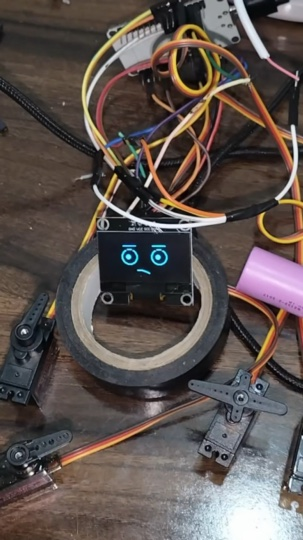
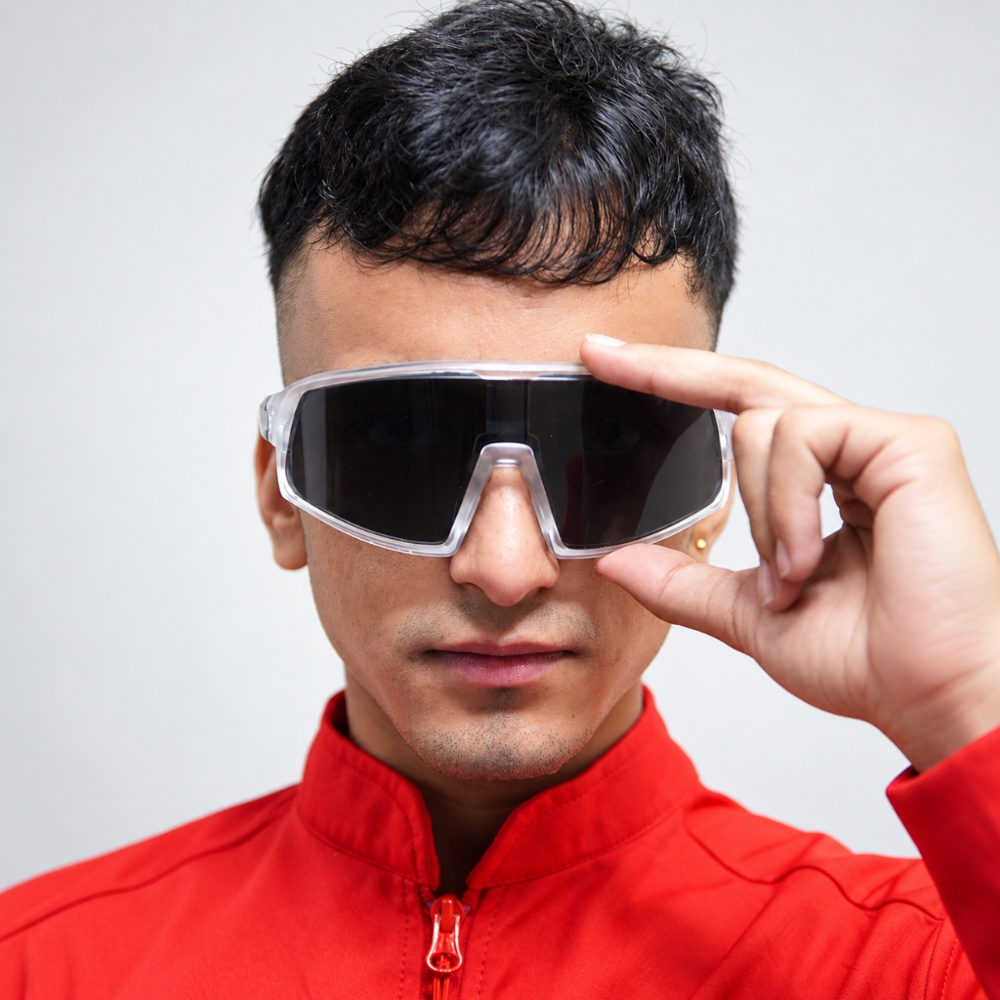
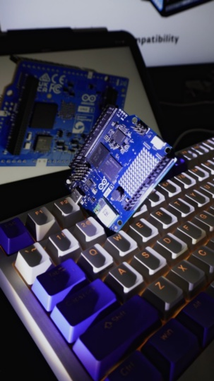
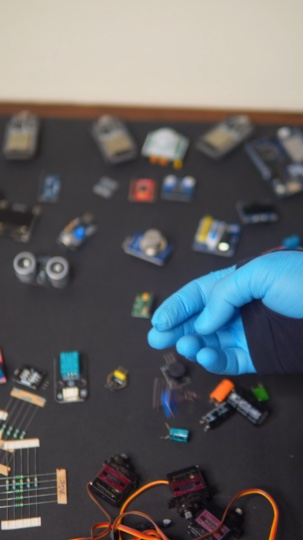
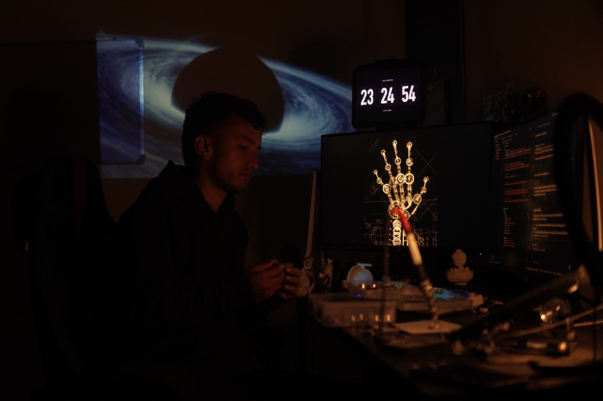
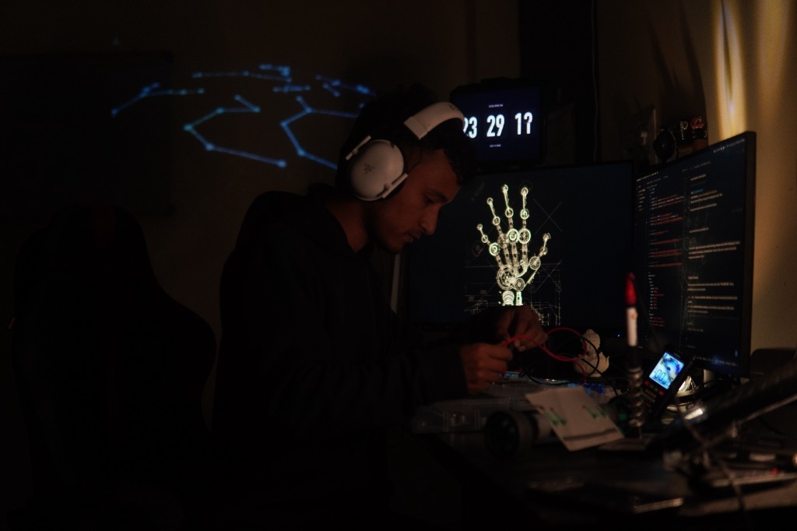

PRACTICE DEMOStorytelling demo
A practice edit exploring how to shape footage into a short visual story.
I’m Priyanshu Bisht. An independent developer
exploring software, electronics and visual storytelling.
I turn curiosity into hands-on projects.

Self-directed videos made while learning. Examples of how I can present a product—not client work or commissioned projects.

PRACTICE DEMOA practice edit exploring how to shape footage into a short visual story.

PRACTICE DEMOAn example of how I can introduce a product through a short cinematic trailer.

PRACTICE DEMOAn example of how I can highlight product features through video.
I build across disciplines.
My work moves between web development, electronics, robotics and video production. I enjoy understanding how things work—and finding ways to make them useful.
After school, I worked in IT at Vortex Studios, then collaborated with an early-stage venture on video and online marketing. Today, I run a personal lab for hardware experiments and technology research.
Web interfaces built with HTML, CSS and JavaScript.
Hands-on prototyping with Arduino, ESP32, circuits and sensors.
Video production, editing in DaVinci Resolve and content strategy.
Prototyping electronics and robotics in my personal lab, alongside technology product research.
Created videos and supported social media content strategy and brand positioning.
Managed IT systems and studio operations, with exposure to professional video workflows.
Built a foundation in web development and how digital products are designed and deployed.
My personal workspace for electronics, robotics and production. A place to test ideas and learn by making.


Have a project in mind? I’m open to working with ambitious builders and early-stage teams.